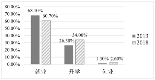

2019 年全国硕士研究生招生考试英语（二）
Section I Use of English
Directions:
Read the following text. Choose the best word(s) for each numbered blank and mark A, B, C or D on the ANSWER SHEET. (10 points)
Weighing yourself regularly is a wonderful way to stay aware of any significant weight fluctuations. 1 , when done too often, this habit can sometimes hurt more than it 2 .
As for me, weighing myself every day caused me to shift my focus from being generally healthy and physically active to focusing 3 on the scale. That was bad to my overall fitness goals. I had gained weight in the form of muscle mass, but thinking only of 4 the number on the scale, I altered my training program. That conflicted with how I needed to train to 5 my goals.
I also found that weighing myself daily did not provide an accurate 6 of the hard work and progress I was making in the gym. It takes about three weeks to a month to notice any significant changes in your weight 7 altering your training program. The most 8 changes will be observed in skill level, strength and inches lost.
For these 9 , I stopped weighing myself every day and switched to a bimonthly weighing schedule 10 . Since weight loss is not my goal, it is less important for me to 11 my weight each week Weighing every other week allows me to observe and 12 any significant weight changes. That tells me whether I need to 13 my training program.
I use my bimonthly weigh-in 14 to get information about my nutrition as well. If my training intensity remains the same, but I'm constantly 15 and dropping weight, this is a 16 that I need to increase my daily caloric intake.
The 17 to stop weighing myself every day has done wonders for my overall health, fitness and well-being. I'm experiencing increased zeal for working out since I no longer carry the burden of a 18 morning weigh-in. I've also experienced greater success in achieving my specific fitness goals, 19 I'm training according to those goals, not the numbers on a scale.
Rather than 20 over the scale, turn your focus to how you look, feel, how your clothes fit and your overall energy level.
Section II Reading Comprehension
Part A
Directions:
Read the following four texts. Answer the questions after each text by choosing A, B, C or D. Mark your answers on the ANSWER SHEET. (40 points)
Text 1
Unlike so-called basic emotions such as sadness, fear, and anger, guilt emerges a little later, in conjunction with a child's growing grasp of social and moral norms. Children aren't born knowing how to say "I'm sorry"; rather, they learn over time that such statements appease parents and friends — and their own consciences. This is why researchers generally regard so-called moral guilt, in the right amount, to be a good thing.
In the popular imagination, of course, guilt still gets a bad rap. It is deeply uncomfortable — it's the emotional equivalent of wearing a jacket weighted with stones. Yet this understanding is outdated. "There has been a kind of revival or a rethinking about what guilt is and what role guilt can serve, " says Amrisha Vaish, a psychology researcher at the University of Virginia, adding that this revival is part of a larger recognition that emotions aren't binary — feelings that may be advantageous in one context may be harmful in another. Jealousy and anger, for example, may have evolved to alert us to important inequalities. Too much happiness can be destructive.
And guilt, by prompting us to think more deeply about our goodness, can encourage humans to make up for errors and fix relationships. Guilt, in other words, can help hold a cooperative species together. It is a kind of social glue.
Viewed in this light, guilt is an opportunity. Work by Tina Malti, a psychology professor at the University of Toronto, suggests that guilt may compensate for an emotional deficiency. In a number of studies, Malti and others have shown that guilt and sympathy may represent different pathways to cooperation and sharing. Some kids who are low in sympathy may make up for that shortfall by experiencing more guilt, which can rein in their nastier impulses. And vice versa: High sympathy can substitute for low guilt.
In a 2014 study, for example, Malti looked at 244 children. Using caregiver assessments and the children's self-observations, she rated each child's overall sympathy level and his or her tendency to feel negative emotions after moral transgressions. Then the kids were handed chocolate coins, and given a chance to share them with an anonymous child. For the low-sympathy kids, how much they shared appeared to turn on how inclined they were to feel guilty. The guilt-prone ones shared more, even though they hadn't magically become more sympathetic to the other child's deprivation.
"That's good news," Malti says. "We can be prosocial because we caused harm and we feel regret."
21. Researchers think that guilt can be a good thing because it may help ____
22. According to Paragraph 2, many people still consider guilt to be ____
23. Vaish holds that the rethinking about guilt comes from an awareness that ____
24. Malti and others have shown that cooperation and sharing ____
25. The word "transgressions" (Paragraph 5) is closest in meaning to ____
Text 2
Forests give us shade, quiet and one of the harder challenges in the fight against climate change. Even as we humans count on forests to soak up a good share of the carbon dioxide we produce, we are threatening their ability to do so. The climate change we are hastening could one day leave us with forests that emit more carbon than they absorb.
Thankfully, there is a way out of this trap — but it involves striking a subtle balance. Helping forests flourish as valuable "carbon sinks" long into the future may require reducing their capacity to absorb carbon now. California is leading the way, as it does on so many climate efforts, in figuring out the details.
The state's proposed Forest Carbon Plan aims to double efforts to thin out young trees and clear brush in parts of the forest. This temporarily lowers carbon-carrying capacity. But the remaining trees draw a greater share of the available moisture, so they grow and thrive, restoring the forest's capacity to pull carbon from the air. Healthy trees are also better able to fend off insects. The landscape is rendered less easily burnable. Even in the event of a fire, fewer trees are consumed.
The need for such planning is increasingly urgent. Already, since 2010, drought and insects have killed over 100 million trees in California, most of them in 2016 alone, and wildfires have burned hundreds of thousands of acres.
California plans to treat 35,000 acres of forest a year by 2020, and 60,000 by 2030 — financed from the proceeds of the state's emissions-permit auctions. That's only a small share of the total acreage that could benefit, about half a million acres in all, so it will be vital to prioritize areas at greatest risk of fire or drought.
The strategy also aims to ensure that carbon in woody material removed from the forests is locked away in the form of solid lumber or burned as biofuel in vehicles that would otherwise run on fossil fuels. New research on transportation biofuels is already under way.
State governments are well accustomed to managing forests, but traditionally they've focused on wildlife, watersheds and opportunities for recreation. Only recently have they come to see the vital part forests will have to play in storing carbon. California's plan, which is expected to be finalized by the governor next year, should serve as a model.
26. By saying "one of the harder challenges," the author implies that ____
27. To maintain forests as valuable "carbon sinks," we may need to ____
28. California's Forest Carbon Plan endeavors to ____
29. What is essential to California's plan according to Paragraph 5?
30. The author's attitude to California's plan can best be described as ____
Text 3
American farmers have been complaining of labor shortages for several years. The complaints are unlikely to stop without an overhaul of immigration rules for farm workers.
Congress has obstructed efforts to create a more straightforward visa for agricultural workers that would let foreign workers stay longer in the U.S. and change jobs within the industry. If this doesn't change, American businesses, communities, and consumers will be the losers.
Perhaps half of U.S. farm laborers are undocumented immigrants. As fewer such workers enter the country, the characteristics of the agricultural workforce are changing. Today's farm laborers, while still predominantly born in Mexico, are more likely to be settled rather than migrating and more likely to be married than single. They're also aging. At the start of this century, about one-third of crop workers were over the age of 35. Now, more than half are. And picking crops is hard on older bodies. One oft-debated cure for this labor shortage remains as implausible as it's been all along: Native U.S. workers won't be returning to the farm.
Mechanization isn't the answer, either — not yet, at least. Production of corn, cotton, rice, soybeans, and wheat has been largely mechanized, but many high-value, labor-intensive crops, such as strawberries, need labor. Even dairy farms, where robots do a small share of milking, have a long way to go before they're automated.
As a result, farms have grown increasingly reliant on temporary guest workers using the H-2A visa to fill the gaps in the agricultural workforce. Starting around 2012, requests for the visas rose sharply; from 2011 to 2016 the number of visas issued more than doubled.
The H-2A visa has no numerical cap, unlike the H-2B visa for nonagricultural work, which is limited to 66,000 a year. Even so, employers complain they aren't given all the workers they need. The process is cumbersome, expensive and unreliable. One survey found that bureaucratic delays led the average H-2A worker to arrive on the job 22 days late. The shortage is compounded by federal immigration raids, which remove some workers and drive others underground.
In a 2012 survey, 71 percent of tree-fruit growers and nearly 80 percent of raisin and berry growers said they were short of labor. Some western farmers have responded by moving operations to Mexico. From 1998 to 2000, 14.5 percent of the fruit Americans consumed was imported. Little more than a decade later, the share of imports was 25.8 percent.
In effect, the U.S. can import food or it can import the workers who pick it.
31. What problem should be addressed according to the first two paragraphs?
32. One trouble with U.S. agricultural workforce is ____
33. What is the much-argued solution to the labor shortage in U.S. farming?
34. Agricultural employers complain about the H-2A visa for its ____
35. Which of the following could be the best title for this text?
Text 4
Arnold Schwarzenegger, Dia Mirza and Adrian Grenier have a message for you: It's easy to beat plastic. They're part of a bunch of celebrities starring in a new video for World Environment Day — encouraging you, the consumer, to swap out your single-use plastic staples to combat the plastics crisis.
The key messages that have been put together for World Environment Day do include a call for governments to enact legislation to curb single-use plastics. But the overarching message is directed at individuals.
My concern with leaving it up to the individual, however, is our limited sense of what needs to be achieved. On their own, taking our own bags to the grocery store or quitting plastic straws, for example, will accomplish little and require very little of us. They could even be harmful, satisfying a need to have "done our bit" without ever progressing onto bigger, bolder, more effective actions — a kind of "moral licensing" that eases our concerns and stops us doing more and asking more of those in charge.
While the conversation around our environment and our responsibility toward it remains centered on shopping bags and straws, we're ignoring the balance of power that implies that as "consumers" we must shop sustainably, rather than as "citizens" hold our governments and industries to account to push for real systemic change.
It's important to acknowledge that the environment isn't everyone's priority — or even most people's. We shouldn't expect it to be. In her latest book, Why Good People Do Bad Environmental Things, Elizabeth R. DeSombre argues that the best way to collectively change the behavior of large numbers of people is for the change to be structural.
This might mean implementing policy such as a plastic tax that adds a cost to environmentally problematic action, or banning single-use plastics altogether. India has just announced it will "eliminate all single-use plastic in the country by 2022." There are also incentive-based ways of making better environmental choices easier, such as ensuring recycling is at least as easy as trash disposal.
DeSombre isn't saying people should stop caring about the environment. It's just that individual actions are too slow, she says, for that to be the only, or even primary, approach to changing widespread behavior.
None of this is about writing off the individual. It's just about putting things into perspective. We don't have time to wait. We need progressive policies that shape collective action, alongside engaged citizens pushing for change.
36. Some celebrities star in a new video to ____
37. The author is concerned that "moral licensing" may ____
38. By pointing out our identity as "citizens," the author indicates that ____
39. DeSombre argues that the best way for a collective change should be ____
40. The author concludes that individual efforts ____
Part B
Directions:
Read the following text and match each of the numbered items in the left column to its corresponding information in the right column. There are two extra choices in the right column. Mark your answers on the ANSWER SHEET. (10 points)
How seriously should parents take kids' opinions when searching for a home?
In choosing a new home, Camille McClain's kids had a single demand: a backyard.
McClain's little ones aren't the only kids who have an opinion when it comes to housing, and in many cases youngsters' views weigh heavily on parents' real estate decisions, according to a 2018 Harris Poll survey of more than 2,000 U.S. adults.
While more families buck an older-generation proclivity to leave kids in the dark about real estate decisions, realty agents and psychologists have mixed views about the financial, personal and long-term effects kids' opinions may have.
The idea of involving children in a big decision is a great idea because it can help them feel a sense of control and ownership in what can be an overwhelming process, said Ryan Hooper, clinical psychologist in Chicago.
"Children may face serious difficulties in coping with significant moves, especially if it removes them from their current school or support system," he said.
Greg Jaroszewski, a real estate broker with Gagliardo Realty Associates, said he's not convinced that kids should be involved in selecting a home — but their opinions should be considered in regards to proximity to friends and social activities, if possible.
Younger children should feel like they're choosing their home — without actually getting a choice in the matter, said Adam Bailey, real estate attorney based in New York.
Asking them questions about what they like about the backyard of a potential home will make them feel like they're being included in the decision-making process, Bailey said.
Many of the aspects of homebuying aren't a consideration for children, said Tracey Hampson, a real estate agent based in Santa Clarita, Calif. And placing too much emphasis on their opinions can ruin a fantastic home purchase.
"Speaking with your children before you make a real estate decision is wise, but I wouldn't base the purchasing decision solely on their opinions," Hampson said.
The other issue is that many children — especially older ones — may base their real estate knowledge on HGTV shows, said Aaron Norris of The Norris Group in Riverside, Calif.
"They love Chip and Joanna Gaines just as much as the rest of us," he said. "HGTV has seriously changed how people view real estate. It's not shelter, it's a lifestyle. With that mindset change come some serious money consequences."
Kids tend to get stuck in the features and the immediate benefits to them personally, Norris said.
Parents need to remind their children that their needs and desires may change over time, said Julie Gurner, a real estate analyst with FitSmallBusiness.com.
"Their opinions can change tomorrow," Gurner said. "Harsh as it may be to say, that decision should likely not be made contingent on a child's opinions, but rather made for them with great consideration into what home can meet their needs best — and give them an opportunity to customize it a bit and make it their own."
This advice is more relevant now than ever before, even as more parents want to embrace the ideas of their children, despite the current housing crunch.
Section III Translation
46. Directions:
Translate the following text into Chinese. Write your translation on the ANSWER SHEET. (15 points)
It is easy to underestimate English writer James Herriot. He had such a pleasant, readable style that one might think that anyone could imitate it. How many times have I heard people say, "I could write a book. I just haven't the time." Easily said. Not so easily done. James Herriot, contrary to popular opinion, did not find it easy in his early days of, as he put it, "having a go at the writing game". While he obviously had an abundance of natural talent, the final, polished work that he gave to the world was the result of years of practising, re-writing and reading. Like the majority of authors, he had to suffer many disappointments and rejections along the way, but these made him all the more determined to succeed. Everything he achieved in life was earned the hard way and his success in the literary field was no exception.
Section IV Writing
Part A
47. Directions:
Suppose Professor Smith asked you to plan a debate on the theme of city traffic. Write an email to
1) suggest a specific topic with your reasons, and
2) tell him about your arrangements.
You should write about 100 words on the ANSWER SHEET.
Do not use your own name. Use "Li Ming" instead. (10 points)
Part B
48. Directions:
Write an essay based on the chart below. In your writing, you should
1) interpret the chart, and
2) give your comments.
You should write about 150 words on the ANSWER SHEET. (15 points)
